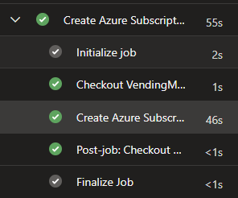

Introduction
An important part of Azure Landing Zones is the ability to create Azure subscriptions (landing zones) through automation.
Any scripts and code used in this post can be found at: https://github.com/SebastianClaesson/SubscriptionVendingExample
Enterprise Agreement Role Assignment for workload identities
There's an article on Microsoft Learn that goes through how to assign a workload identity permissions to an Enterprise Agreement.
If you are interested in following the least-privileged access model, then we must follow the article above to grant our workload identity access as "SubscriptionCreator" over our enrollment account. The process of subscription vending must not be bound to a employees account or permissions. However, not everyone is comfortable following the guide and take short-cuts such as assigning Enterprise Administrator over the billing account using the IAM controls in Azure.
To assist with the creation of the EA Role assignment, I've created the following script New-EnterpriseAgreementRoleAssignment
Once the assignment has been done, we need to build our subscription vending automation somewhere. This could be an Azure Function, GitHub/Azure DevOps Pipeline, Custom container or part of your self-service portal.
Create your first Azure Subscription using PowerShell
The Az.Subscription PowerShell module contains the function "New-AzSubscriptionAlias" to provision a new Azure Subscription.
We can simply write a function to provision the subscription using our workload identity. The function will run in the current logged in users context.
[CmdletBinding()]
param (
# BillingScope
[Parameter(Mandatory)]
[string]
$BillingScope,
# Workload
[Parameter(Mandatory)]
[string]
$Workload,
# ManagementGroupId
[Parameter(Mandatory)]
[string]
$ManagementGroupId,
# Identifier
[Parameter(Mandatory)]
[string]
$Identifier,
# Environment
[Parameter(Mandatory)]
[string]
$EnvironmentShortName,
# DisplayName
[Parameter(Mandatory)]
[string]
$DisplayName
)
# The script requires the Az PowerShell Module
if (! (Get-Module 'Az.Subscription' -ListAvailable)) {
Throw 'Please install the Az PowerShell Module'
}
Import-Module .\Az.Subscription
$params = @{
AliasName = "$Identifier-$EnvironmentShortName".toLower()
SubscriptionName = "$DisplayName-$EnvironmentShortName".toLower()
BillingScope = $BillingScope
Workload = $Workload
ManagementGroupId = $ManagementGroupId
}
Write-Verbose "Attempting to list any Azure Subscription" -Verbose
$SubAliases = Get-AzSubscriptionAlias
if ($SubAliases.AliasName -Contains "$($params.AliasName)") {
$SubscriptionInfo = $SubAliases | Where-Object {$_.AliasName -eq "$($params.AliasName)"}
Write-Verbose "The subscription already exists, Skipping creation." -Verbose
} else {
try {
$SubscriptionInfo = New-AzSubscriptionAlias @params
Write-verbose "Successfully created '$($SubscriptionInfo.AliasName)'" -Verbose
} catch {
throw
}
}Azure DevOps pipeline example
Configure Service Connection with Federated Credentials
To utilize Azure DevOps for our Workload identity, we can utilize different types of authentication. I strongly recommend that federated credentials is configured to authenticate our workload identity.
This means we do not have to manage a client secret, instead we trust the Azure DevOps directory to manage the credentials to our workload identity.
You must register the resource providers for Management Groups and Subscriptions to successfully run the automation in your initial subscription.
## Requires the module ADOPS
function New-ADOServiceConnection {
[CmdletBinding()]
param (
[Parameter(Mandatory)] [string] $SubscriptionId,
[Parameter(Mandatory)] [string] $SubscriptionName,
[Parameter(Mandatory)] [string] $Environment,
[Parameter(Mandatory)] [string] $Identifier,
[Parameter(Mandatory)] [string] $ADOOrganization,
[Parameter(Mandatory)] [string] $ADOProjectName,
[Parameter(Mandatory)] [string] $RoleDefinitionName
)
}
# Connects to Azure DevOps
Connect-ADOPS -Organization $Organization -OAuthToken $AccessToken
# Gets the Azure DevOps Service Connection
$AdopsSC = Get-ADOPSServiceConnection -Name $ServiceConnectionName -Project $ProjectName
# Creates Federated Credentials for authentication
$FederatedCredentialsParams = @{
ApplicationObjectId = $AppDetails.Id
Issuer = $AdopsSC.authorization.parameters.workloadIdentityFederationIssuer
Subject = $AdopsSC.authorization.parameters.workloadIdentityFederationSubject
Name = 'AzureDevOpsAuthentication'
Audience = 'api://AzureADTokenExchange'
}
New-AzADAppFederatedCredential @FederatedCredentialsParamsDo not forget to limit access to the service principal. If you intend to let non-platform engineers provision and create landing zones then perhaps a good option is to configure approval for the use of the service connection.
Azure DevOps .yml example
trigger: none
variables:
- name: subscriptionCreationServiceConnection
value: 'SERVICECONNECTIONNAME'
parameters:
- name: Identifier
displayName: What is the identifying name of the Azure Landing Zone?
type: string
- name: DisplayName
displayName: What is the display name of the Azure Landing Zone?
type: string
- name: ManagementGroupName
displayName: Azure Management Group Name
type: string
- name: Workload
displayName: Azure Subscription Workload offer
type: string
values:
- Production
- DevTest
- name: Environment
displayName: Environment?
type: string
default: Sandbox
values:
- sbx
- dev
- acc
- prod
stages:
- stage: provision
displayName: 'Subscription Vending'
jobs:
- job: subscriptionCreate
displayName: 'Create Azure Subscription'
steps:
- task: AzurePowerShell@5
displayName: 'Create Azure Subscription'
inputs:
azureSubscription: $(subscriptionCreationServiceConnection)
ScriptType: 'FilePath'
azurePowerShellVersion: LatestVersion
pwsh: true
ScriptPath: 'New-AzureSubscription.ps1'After importing and running the Azure DevOps pipeline, the output should simply look like this:

Conclusion
We have now established a workload identity with federated credentials to provision our Azure Subscriptions. We have also created the necessary automation & Azure DevOps pipeline to provide a basic self-service feature for our colleagues.
We can continue to add steps to our subscription vending, for example incorporating the orchestration of Entra Id security groups, privileged access management, entitlement management, IP address management, critical infrastructure resources such as peering to hub network, budgets, service health alerts and so on.
References: